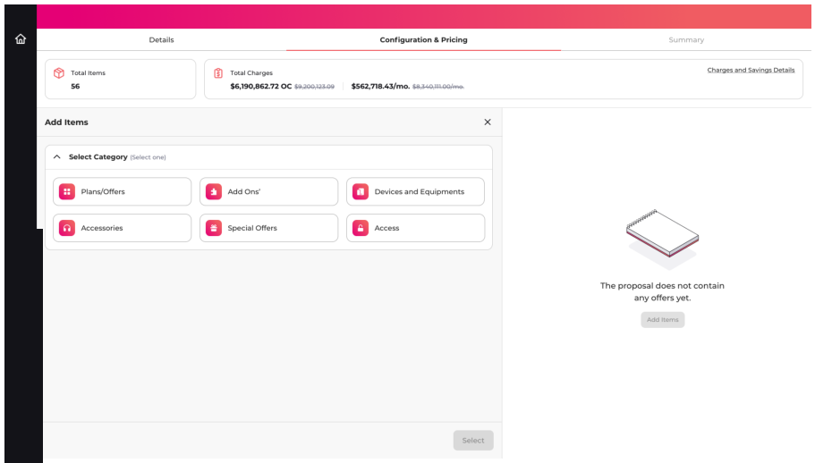
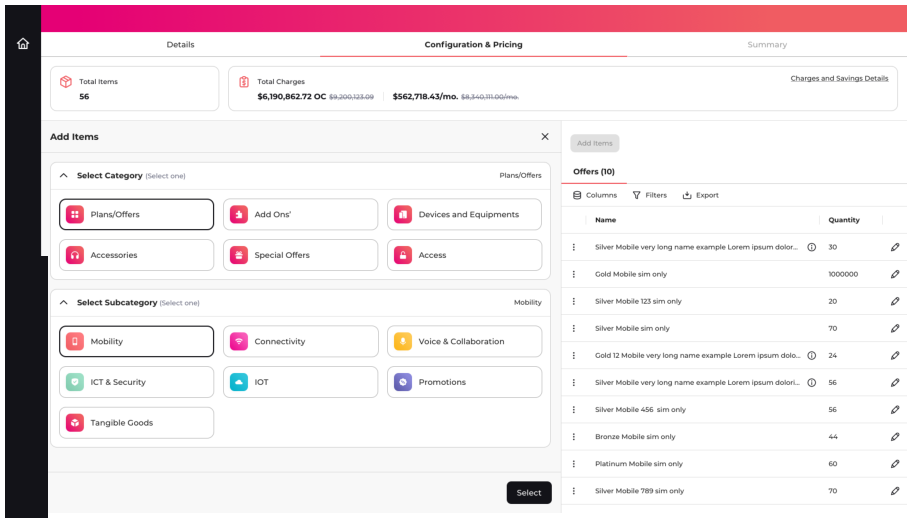
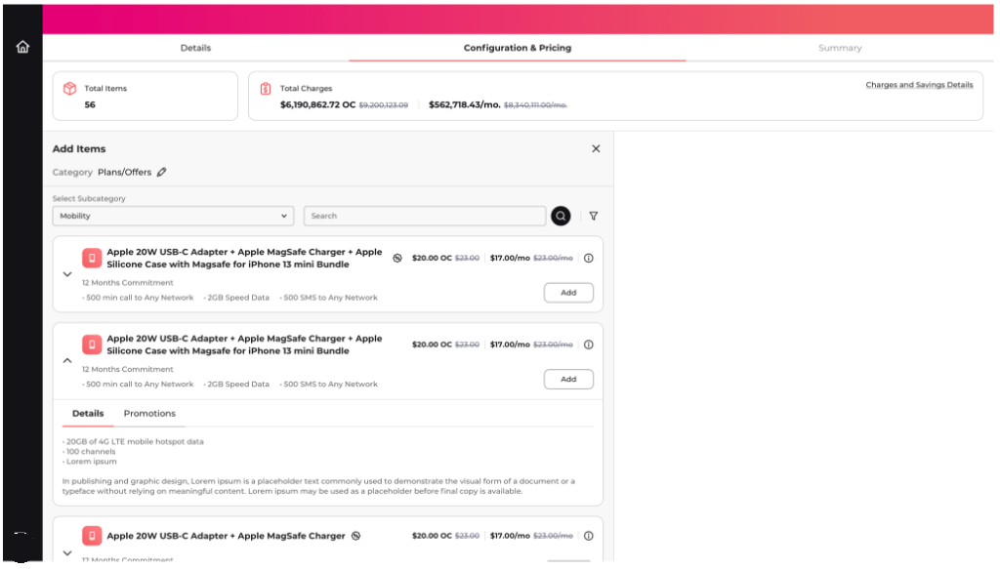
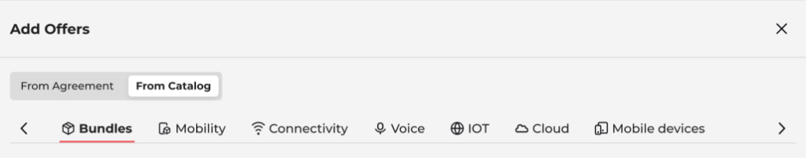
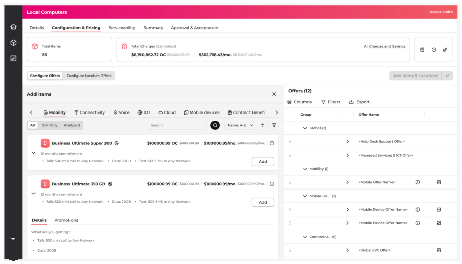
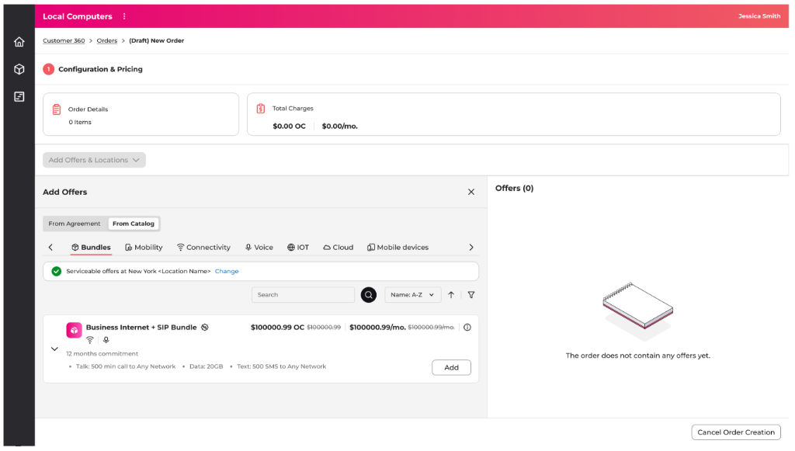
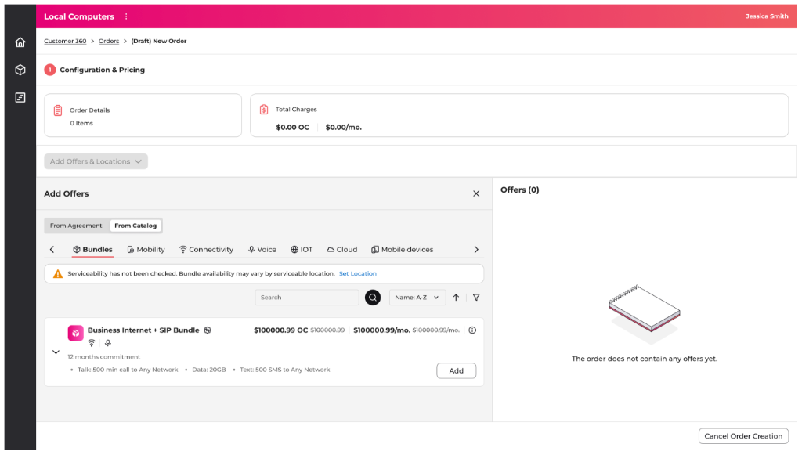

Designing Enterprise Sales-to-Order Experiences
Over three years at Amdocs, I designed workflows and interaction frameworks across Sales, Commerce, and Order Management products to simplify massive complexity.
Cross-Application Frameworks: Business Validation & Process Notification
Defined the interaction strategy for enterprise validation and asynchronous notifications by transforming distributed business rules into a reusable cross-application framework. Established standardized interaction patterns and implementation guidelines that enabled a consistent, scalable experience across the Sales-to-Order ecosystem.
Business Context
B2B Sales and Commerce platforms handled complex, high-volume transactions but lacked a unified framework for business validations, error handling and asynchronous processing. As a result, operators frequently encountered order fallouts caused by silent backend failures, fragmented validation feedback and limited visibility into transaction states.
Part 1: Business Validation System
The Business Validation Engine monitors order configurations in real-time, triggering severity-based notifications (Errors, Warnings, Info alerts) when catalog rules are breached.
Business Validation Processing Flow
Next Step / Stepper / Submit / Save
Header Tab / Save / Manual Run
Initializes calculation queue
Checks eligibility & pricing
Filters Errors vs. Warnings/Info
Groups errors by location/step
Banners & Draggable Popover
Viewport auto-scrolled to field
Unlocks submit after error fix
Business Validation Experience
Business validations can be triggered automatically during background processing or manually by the operator. Validation results are consolidated and surfaced through a consistent interaction model, with inline status indicators summarizing the highest severity while providing counts for all validation types.
When multiple validation messages are present, users can expand them into a draggable validation workspace. Messages are grouped by severity and presented as actionable items, allowing operators to keep the panel open, navigate directly to affected configurations, and resolve issues without losing context during complex order creation.
Specification mapping the expandable validation popover panel (left) to the collapsed status indicator (right).
- Standardized business validation interactions through a reusable, severity-based validation framework.
- Reduced time to identify and resolve validation issues by consolidating distributed messages into a centralized validation workspace.
- Enabled uninterrupted issue resolution with a persistent, draggable validation panel and contextual navigation to affected configurations.
- Established scalable interaction patterns for business validations across Sales and Commerce applications.
Part 2: Async Notifications Framework
B2B operations often involve long-running background tasks (e.g. bulk price recalculations or service coverage checks) that cannot be completed synchronously. The Async Notifications Framework keeps operators informed without interrupting their work.
Asynchronous Notification Processing Flow
Location Offer / Serviceability / Calculate Charges
Executes calculation queue off main thread
Blocks layout edits (e.g., Location Config)
Runs parallel catalog and pricing cycles
Sorts state: Success vs. Failure vs. Partial Complete
Binds results to UI alert message format
Header Toast (Success) or Persistent Banner (Failure)
Fires Auto-refresh or shows Manual prompt
Restores edit access and unlocks Next Step
Async Process Notification Experience
Enterprise transactions often continue processing after user actions are completed. To improve visibility into these background operations, I designed a reusable notification framework that communicates processing, success, partial completion and failure states through consistent interaction patterns.
Each notification provides contextual feedback and, where appropriate, links directly to the Process Monitoring workspace, allowing operators to track ongoing background activities, review processing history and investigate failures without interrupting their workflow.
Specification mapping the persistent banners and toast messages for all four async notification states (Success, Failure, Partial, and Warnings).
- Standardized asynchronous notification patterns across long-running enterprise workflows.
- Improved visibility into background processing through consistent process state indicators and contextual notifications.
- Enabled end-to-end process monitoring by connecting notifications with a centralized Process Monitoring workspace for tracking, troubleshooting and auditability.
- Reduced operator uncertainty by clearly communicating processing, completion and failure states throughout complex ordering journeys.
Validation Workflow
The following screen flow illustrates the lifecycle of an asynchronous transaction. It demonstrates the transition from a successfully completed background process to handling validation warnings, and shows how operators access detailed execution records.
When a background action (e.g. pricing) completes without errors, a temporary success toast notification appears in the upper right.
If validation errors occur, a persistent warning alert is pinned to the header with an action link to view details.
Clicking "View Process Monitoring" launches the central console listing task IDs, execution times, and status logs.
Process Monitoring Icon States
The global B2B checkout header features a persistent process monitoring button that adapts its badge indicators in real-time to reflect the status of background calculations.
Specification mapping the four real-time process monitoring states: In-Progress (blue clock), Completed (green check), Failure/Partially Completed (red exclamation), and Validation Issues (orange warning).
Architecture Principles
I defined five core UX Architecture principles to guide the design and engineering teams during the development of these cross-application utility frameworks:
-
Non-Intrusive Validation
Disclose validation alerts inline first. Do not use blockades or interrupting popups unless error resolution is critical to proceed.
-
Contextual Navigation
Allow users to click any alert inside the summary list to auto-scroll the viewport and highlight the target inputs directly.
-
State Transparency
Provide real-time status indicators in the global header so operators are always aware of background syncing processes.
-
Structured Alert Hierarchy
Classify system feedback into Errors, Warnings, and Info tabs to help operators prioritize fixes during checkout.
-
Centralized Auditing
Maintain a centralized background task monitoring log to let operators review execution histories and trace validation fallouts.
Business Outcomes
The cross-application frameworks successfully improved data accuracy and operator efficiency across Sales and Commerce checkouts:
Reduced Order Fallouts
Validating inputs inline prevents invalid data configurations from reaching downstream provisioning systems.
Accelerated Checkout Times
Draggable popovers allow operators to quickly navigate and resolve multiple warnings without context switching.
Reusable Utility Subsystems
Standardized interaction models reduce future front-end design cycles for new checkouts by ~40%.
Mitigated Operational Errors
Real-time validation checks ensure all configuration details align with active contract agreements.
Standardized Operator Behaviors
Operators benefit from unified, predictable system patterns when navigating across Sales and Commerce checkouts.
Reflection
Designing for enterprise is not about designing individual screens or features. The true success of this initiative lay in architecting reusable validation and status notification engines that scale seamlessly across the entire suite as new business capabilities emerge.
Designing a Scalable Offer Discovery Framework
Reimagining enterprise offer discovery through interaction architecture, contextual navigation, and scalable product thinking.
Legacy Model
As enterprise telecom catalogues expanded, the existing hierarchical discovery model became increasingly difficult to scale across new products, services and customer implementations. The objective was not simply to redesign Add Offer, but to establish a reusable interaction framework that could support future business evolution.
Legacy Limitations
- Deep hierarchical navigation — Sequential category to sub-category viewport redirection.
- Late offer discovery — Actual product items remain hidden behind multiple loading screens.
- Difficult to scale — Adding nested or modular product packages breaks layout grids.



Strategy
A dual strategy was devised: analyze the core friction points in operator behavior (Research) and establish a scalable interaction model governed by architectural rules (Design Principles).
Customer Feedback
Operators repeatedly struggled with navigating deep catalog hierarchies, leading to high drop-offs during configure-price-quote steps.
Domain Experts
User behavior data showed that agents think in terms of specific products and commercial packages rather than arbitrary category folders.
Product Team
The product roadmaps required future product types and subscription rules to fit naturally into the checkout workflow without code rewrites.
UX Observation
Search and sorting operations are most effective only after high-level commercial context has been established by the user.
Strategic Design Decision
Shift from a rigid, hierarchy-driven navigation system to a contextual, modular product discovery framework.
Core Design Principles
-
Contextual Discovery
Provide top-level boundary controls first, ensuring search and actions are scoped appropriately.
-
Progressive Filtering
Allow users to narrow selections dynamically without reloading the catalog viewport.
-
Scalable Categories
Side-scrollable category tabs natively support growing catalogs without breaking the layout grid.
-
Search within Context
Autocomplete lookup queries are filtered automatically based on the user's active configuration scope.
-
Reusable Interaction Framework
Standardized layouts are shared between Sales and COM platforms, reducing cognitive friction for operators.
Redesigned Interaction Model
The redesigned interaction model unified Sales and B2B Commerce platforms into a single-pane discovery framework. Catalog items are exposed immediately within a persistent container, eliminating screen redirection and high operator drop-off.


Interaction Refinements
- Product-first discovery — Removes category gateways, placing catalog offers directly inside the user's viewport.
- Search within category — Autocomplete lookup queries are scoped dynamically to the active catalog segment.
- Progressive filtering — Interactive sidebar controls allow narrowing of results without full layout reloads.
- Earlier visibility of offers — Surfacing commercial packages instantly, shortening user decision loops.
- Reduced navigation depth — Consolidating multiple wizard steps into a side-by-side drawer canvas.
Design Scope within the Sales-to-Order Journey
The highlighted interaction model represents the part of the end-to-end Sales-to-Order journey redesigned as part of this case study.
This case study focuses on redesigning the interaction model for discovering, selecting and configuring offers within a broader enterprise Sales-to-Order workflow, creating a scalable foundation that was later extended across multiple enterprise channels.
Framework Evolution
The redesigned interaction model continued to support new business capabilities without changing the core user experience.
When product catalog requirements evolved to include nested "Bundle of Bundles" models and multi-layered connectivity properties, the framework accommodated them natively. Below is the journey of how the interaction architecture scaled:
Core discovery patterns established.
Added category tab without layout changes.
Inline location filters added to drawer flow.
Surfaced composite pricing hierarchies.
Adopted natively by Sales & COM portals.
Optional Serviceability
Direct Bundle and Connectivity ordering introduced a new challenge—users could add location-dependent products without first completing the Sales proposal flow. To address this, an optional Serviceability Check was introduced within Commerce, enabling early location-based eligibility validation without interrupting experienced users' workflows. Users who skipped the check could continue ordering, with eligibility verified later during order submission.


Business Capability
Optional Serviceability validation introduced into Commerce before Bundle or Connectivity selection, enabling location-aware product eligibility.
Ecosystem Impact
Introducing Bundles extended beyond offer discovery and influenced multiple downstream enterprise workflows.
Surfacing bundle relationships consistently across B2B platforms required aligning the interaction framework with downstream inventory, billing, and provisioning cycles.
Offer List Structure
Bundle relationships and pricing hierarchy are surfaced consistently within the configuration view. Configured parameters (e.g. line rate, equipment, SLA) are validated before adding to the proposal.
Installation & Delivery
Delivery and installation workflows support bundled products and physical dependencies. Provisioning schedules and physical equipment shipments are tracked automatically.
Billing Accounts
Billing profiles and billing accounts handle complex enterprise relationships, payment terms (e.g. Net 30), and invoicing rules for commercial packages.
Products & Services
Bundle hierarchy remains visible throughout the service lifecycle. Allows support agents to manage individual parameters without breaking the commercial package.
Design Reflection
The success of this project was not redesigning Add Offer. It was designing an interaction framework that continued to support evolving business capabilities—including Bundles, Bundle of Bundles, Connectivity and Serviceability—without redesigning the underlying user experience. This demonstrated how strategic interaction design can reduce future implementation effort while maintaining consistency across enterprise applications.